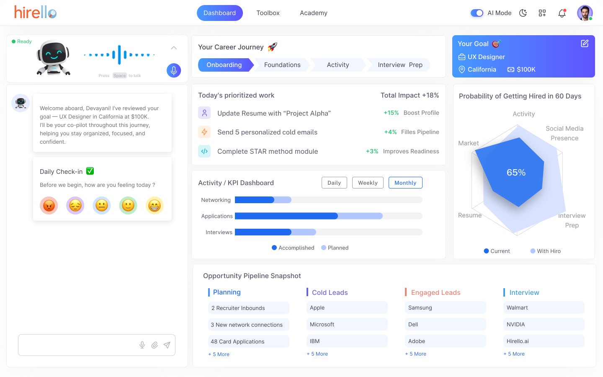
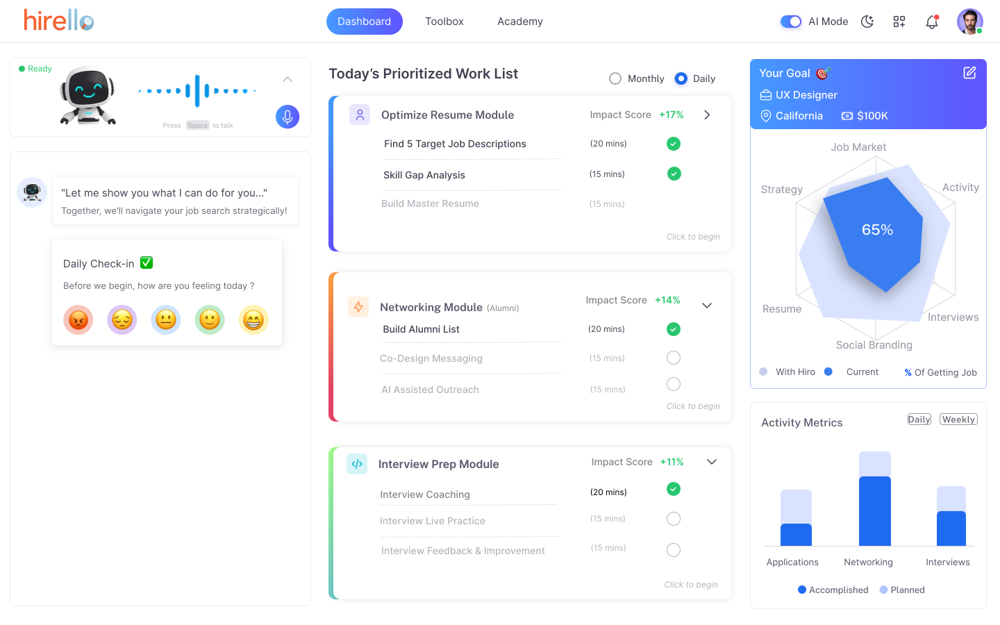

Hirello was envisioned as an Al-guided job search system
Hirello aimed to help users make consistent progress in their job search through structured workflows and guidance.
My role was to translate this into a usable system: dashboard, workflows, interaction patterns.
Before committing to a direction, I explored different ways the system could come together.
At this stage, there was no prototype yet — the goal was to define structure, not validate it.
Key Questions
- — Should Hiro live inside the dashboard or act as a separate layer?
- — Should tasks feel like a conversation or a structured list?
- — How much guidance is helpful before it becomes overwhelming?

The first version prioritized completeness over clarity

multiple modules
dense information
no clear priority
Users had to figure out what to do
What we learned after testing the first version
We interviewed 10 users over 4 weeks. The UI looked good — but the experience didn’t land.
pipeline
health score
The final direction focused on reducing overwhelm and guiding action
- • prioritize a single next step
- • reduce visible complexity
- • strengthen hierarchy
- • focus on actions that drive responses
Users didn’t need more data — they needed direction
The dashboard was redesigned to focus on what to do next
reduce
decision-making
surface one
clear next step
make progress
actionable
V2 introduced clearer structure

grouped tasks into modules
improved organization
Easier to navigate, but still required user decisions
The founders selected V2 as the dashboard direction to move forward with.
V3 explored an action-first experience

one stronger primary action
reduced visual noise
clearer hierarchy
Faster decisions, lower cognitive load
V3 was my exploration of a more focused, action-first direction for future refinement.
Impact
designed end-to-end
across key journeys
by UX research
Product Strategy
User research directly influenced product direction. Patterns from interviews led to a shift toward networking-focused workflows, now shaping the roadmap.
Design Advocacy
Advocated for a more focused, calm product direction aligned with user needs. Moved away from overly playful and gamified approaches.
Collaboration
Defined core user flows, designed key product surfaces, and collaborated closely with engineers during implementation.
Reflection
This project shifted how I think about product design.
Users don’t need more features or data — they need clear direction at the right moment.
I learned that designing intelligent systems is not about showing everything. It’s about helping users decide what to do next.